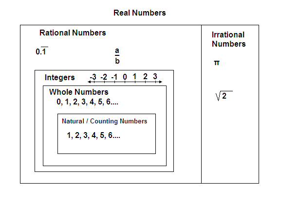

x // y
Consider the long division example:

Below is a diagram of all the types of numbers that you learned about in your math classes

Anzarta [CC BY-SA 3.0 (https://creativecommons.org/licenses/by-sa/3.0)]
In computer science, we use slightly different terms to describe numbers.
Just like you learned in your math class, integers are the set of all the positive and negative numbers with no decimal. Whole numbers and the counting numbers are including in the integers. In computer science, we often integers by their abbreviation, int (or ints), after the name of the built-in function int( ). We can perform any arithmetic operation on integers in Python.
You will notice from the above examples, the answer stayed as an integers for all except the division. Even if the division of two integers results in a whole number answer, Python print out a decimal by default.
The basic arithmetic operators that are included in Python by default:
Exponentiation : x to the power of y
x ** y
Negation: negative x
-x
Floor Division: the whole number answer after integer division of x by y
x // y
Consider the long division example:
To yield the remainder for the above example, we use
Modulo: remainder after integer division of x by y
x % y
Compare the floor division and modulo to integer division:
For the above examples,
25.6 = 25 remainder 3
The different operators allows us to write equivalent values in different ways.
The operators higher in the table are evaluated before operations lower in the table. For any operators on the same level, they are evaluated from left to right.
Practice #1
For the following practice questions, put brackets around groups of numbers to see how the results change:
Some arithmetic operators can be applied to string operands, but their meanings are different. The “addition” of two strings results in their concatenation, which means just joining them together one after the other. The “multiplication” of a string and a number n concatenates the string with itself n times. For example, the expression ‘Winter’ + ‘is’ + ‘coming!’ produces the string value ‘Winteriscoming!’. The expression ‘Na’ * 8 + ‘ BATMAN!’ produces the string value ‘NaNaNaNaNaNaNaNa BATMAN!’.
So far we have only learned about how to deal with integers in Python. If you refer back to the diagram of numbers at the top, we need a way to express values that have a decimals. In computer science, we call these numbers floating-point data (or floats). Floating point numbers can have up 17 digits of precision (decimals).
Any number with a decimal is a floating-point number. For example:
You can see that even a whole number, like 42, can be written as a float. You don't even need to put a 0 after the decimal for the number to become a float. We can also write floats in scientific notation. For example, the speed of light is 3x108 m/s, but we can write it as
If you use an operator with an integer and a float, the result will be a float:
What happens when we try to print text and numbers? Consider the example below:
I will receive a TypeError message because you can only add numbers to numbers or add strings to strings. To be able to print my message properly, I need to convert the number to a string using the string function str( ). Consider the above example again:
We can also convert floats to strings:
Similarly, we can convert strings into numbers. To change a string to an integer, you can use the int( ) function. The below example will receive another TypeError.
If I change num1 to an integer, then I will be able to complete the addition:
We can also convert strings into floats using the float( ) function:
Converting a string into a number, only works if there is only a number contained in the string:
The above code will produce a ValueError because Python cannot figure out which part of the string is the number.
Practice #2
Store your age in a variable as a number. Using that variable, print out a message that states your name and what your age is.
Practice # 3
Using the arithmetic operators, print at at least 4 additional statements that result in 8 using strings and numbers. You can only use each operator once. I completed one with addition: